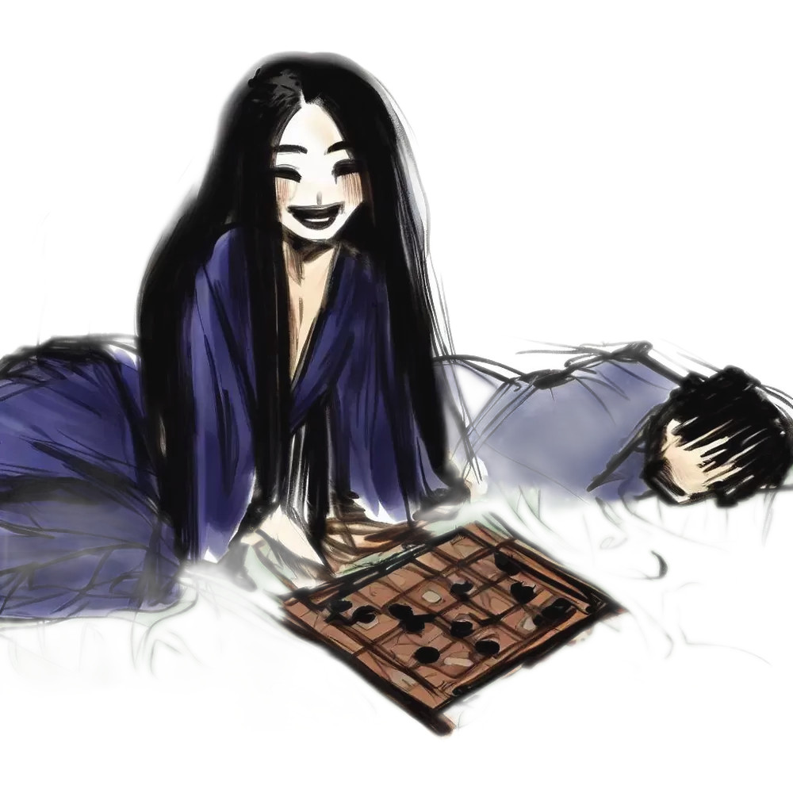
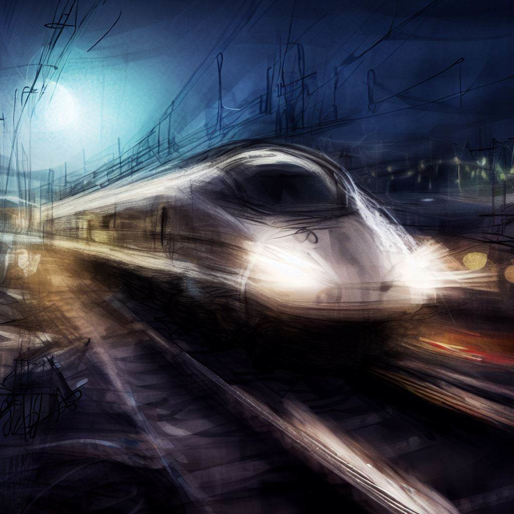
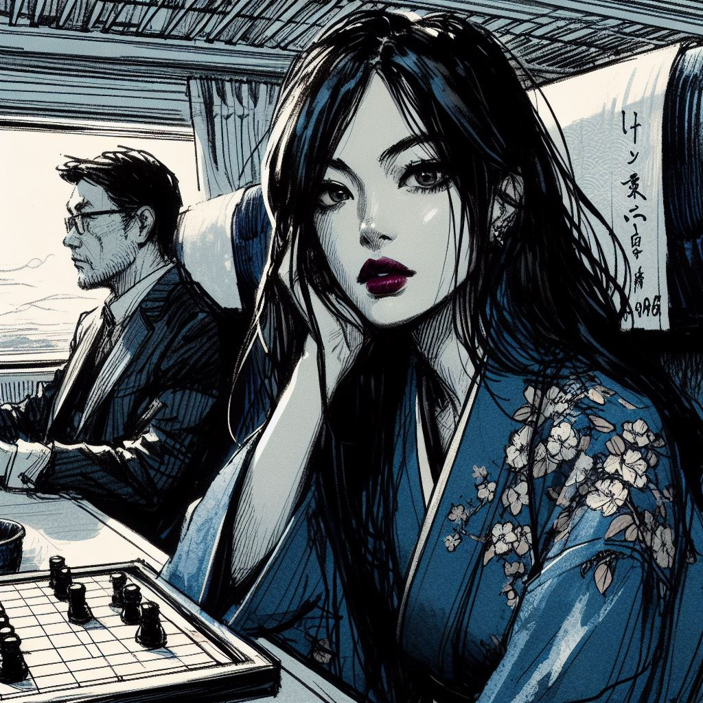
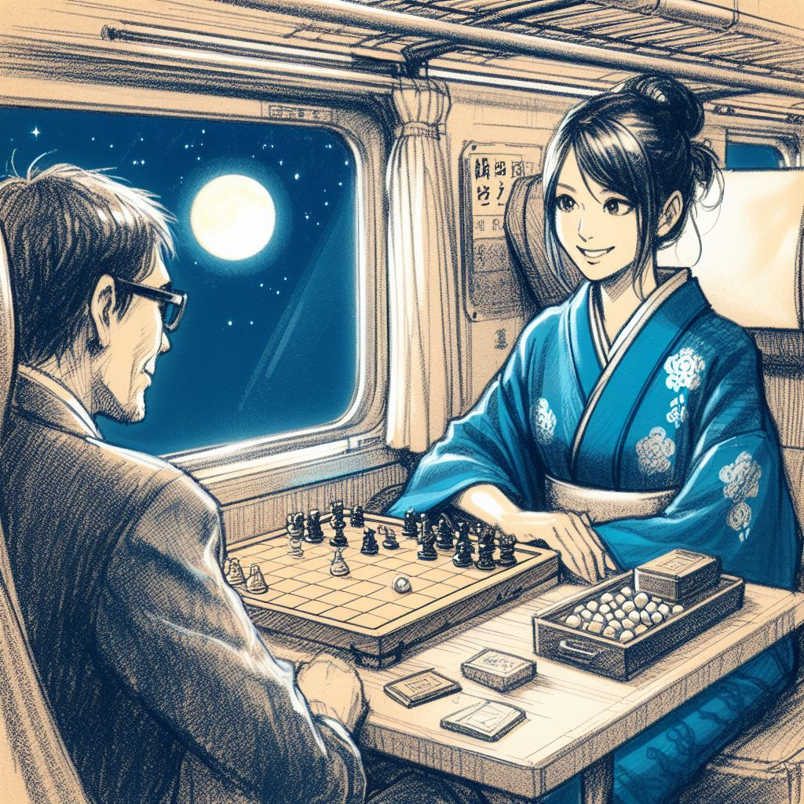
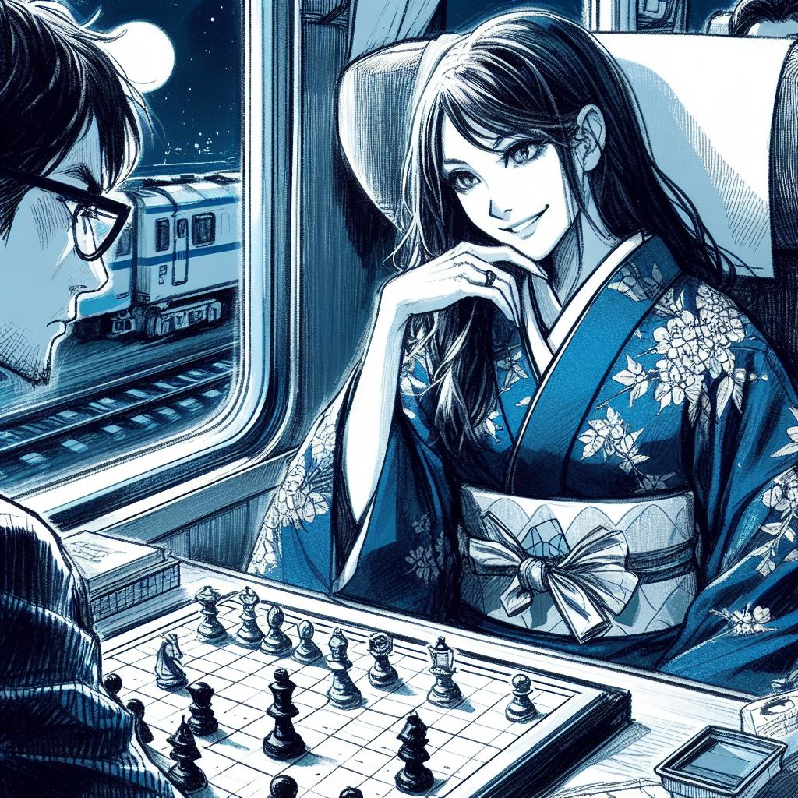

On the way to the biggest tournament of his life, Takeshi, the world champion of ōgi, faces an unexpected opponent during a nighttime train journey.
This mysterious stranger, with her simultaneously seductive and disconcerting style, pushes him to his limits and leads him into a struggle that goes beyond the mere game board.
As the train moves through the night, the duel turns into a test of mental and physical endurance, severely challenging Takeshi's nerves.
Amid palpable tension, hidden stakes, and shocking revelations, this train journey is a trial he is not ready to forget.
Introduction
Within the circles of ōgi players, a traditional Japanese game similar to shogi, circulates an intriguing story.
This story, well-known in the Kansai region, speaks of Komayo, a figure as enigmatic as she is fascinating, mentioned during full moon nights.
According to this tale, Komayo, with her captivating beauty, lures lost players by offering them a game of ōgi.
Her presence and mysterious charm seem to envelop the games with a particular aura, leading the players into a whirlwind of strategies and maneuvers deeper than the game itself.
It is said that those who play against her experience a gradual feeling of weariness, a fatigue that seeps into their mind and body.
This phenomenon, described by some as supernatural, would plunge them into a deep and irreversible sleep, an almost mythical state.
The most mysterious part of this story concerns the true nature of Komayo.
It is told that in these moments of extreme vulnerability, she would reveal her true form and siphon the vital energy of the players, leaving behind only a feeling of emptiness and loss.
These players, exhausted by this experience, would turn into yūrei, wandering spirits doomed to a never-ending search.
Haunted by the memory of their encounter with Komayo and by the unsatisfied desire to finish their game, these spirits would be trapped in endless wandering.

Departure for Tokyo
The night wrapped the Kansai region, illuminated by the full moon casting its silver halo over the moving landscape.
The Shinkansen, a symbol of technology and efficiency, glided silently through the night, carrying its passengers towards Tokyo.

Onboard, Takeshi, the world ōgi champion, thoughtfully observed the nocturnal landscape.
Comfortably settled, he was soothed by the train's calming rhythm.
The cabin, bathed in an almost meditative tranquility, was paced by the soft hum of the train and the regular clacking of the rails, composing a hypnotic melody.
The moon's reflections on the rice fields and forests added a touch of serenity and mystery to the landscape.
For Takeshi, this nighttime journey was a calm before the storm.
It was a return to the familiarity of Tokyo, where new challenges awaited him: an imminent competition and a formidable opponent to face.
The Arrival of the Woman in the Blue Kimono
The quiet and comfortable cabin was suddenly disturbed by a noise.
The door opened with a sharp whistle, drawing Takeshi's attention despite himself.
A young woman entered, dressed in a dazzling night-blue kimono that contrasted with the surrounding sobriety.
Her natural beauty and grace were undeniable, capturing the gaze of those around her.
Takeshi, momentarily distracted, quickly returned to his strategic thoughts.
When the young woman sat next to him, he briefly noticed a spark of recognition in her eyes.
Probably an admirer, he thought, without showing his amusement.
Accustomed to such attention, he did not let it divert him from his priorities.
For Takeshi, the real challenge was the match tomorrow.
His mind remained filled with strategies and tactical movements of ōgi.
As a champion, his determination and concentration remained unshakeable.
The true challenge, for him, was just beginning.
The Invitation

As the Shinkansen slid through the night, the young woman next to Takeshi delicately pulled out an ōgi board from her bag.
The wooden pieces, finely crafted and adorned with elaborate patterns, caught the moonlight, creating a soothing play of reflections.
Her gaze fell on Takeshi, sparkling with admiration, as she offered him a game with respectful timidity.
Takeshi, momentarily distracted by her enthusiasm, quickly masked his conflicting thoughts.
He was there to prepare for the crucial match the following day, not to be drawn into an impromptu game.
He politely declined, citing the need to stay focused for the tournament.
However, the young woman's confidence did not waver.
Her sincere gaze and her introduction as a passionate ōgi student resonated with Takeshi, echoing his own passion.
She expressed her admiration for him and her eager desire to learn.
Her words revealed a deep respect and a sincere aspiration to excel.
Touched, Takeshi felt his champion's heart waver.
The dilemma was real: the concentration needed for tomorrow's tournament versus the chance to inspire a new generation.
After a moment of intense reflection, a discreet smile formed on his lips.
He nodded gently, his gaze settling on the ōgi board.
The Ōgi Waltz
The game began, a silent ballet of calculated movements and unspoken strategies.
Takeshi, though exhausted from the day's events and aware of the upcoming tournament's significance, did not underestimate his opponent.
With each turn, he carefully weighed his options, evaluating several moves ahead.
The young woman's gaze never left the game board, while Takeshi was swept up in the game's complex currents.
After ten minutes of intense play, the young woman's skill level began to impress Takeshi.
It was clear she was no ordinary amateur.
Her play was quick, her movements fluid, and though her choices were often surprising, they proved effective.
Her unconventional opening seemed natural and instinctive.
She managed to counter his strategies and gave him a run for his money.
Takeshi, accustomed to dominating his opponents, found himself increasingly under pressure.
However, what surprised Takeshi the most was the young woman's intuition.
Her instinct allowed her to quickly evaluate the best lines of play, sometimes even before Takeshi spotted them himself.
She played as if she had already predicted the moves he would make, anticipating his strategies with disconcerting ease.
She seemed to be enjoying herself.

Takeshi felt a spike of admiration and respect for his opponent.
But this admiration was tinged with slight irritation.
His mind was tiring faster than he would have liked, and he felt that this unexpected game was beginning to take a toll on his energy reserves.
He would not have thought that an impromptu match on a train could give him so much trouble.
Yet, despite the growing urgency to shorten the game, Takeshi remained hooked, his competitive spirit pushing him to continue.
The challenge posed by this mysterious stranger was more enticing than he had imagined.
The Champion's Counterattack
Within the quiet confines of the carriage, a silent and merciless battle was raging.
Takeshi, the world ōgi champion, was engaged in a fierce struggle against an unexpected opponent, the young woman in the dark blue kimono.
A slight throbbing pain made itself felt in Takeshi's temple.
He realized it was probably a headache, a consequence of the artificial lighting in the carriage or the slight jostling of the train.
However, he quickly dismissed this thought from his mind.
He didn't have the luxury to be distracted by such details.
Takeshi's eyes were fixed on the game board.
His mind was fully focused on the combinations, the possible sequences of moves, searching for any sign of weakness in his opponent's defense.
The struggle was intense, a true storm in the brain.
Takeshi then embarked on a series of bold maneuvers.
Sacrificing several of his pieces, he opened new lines of attack, seeking to tip the balance of the game in his favor.
Each move he played was a declaration of intent, an affirmation of his will to win.
His strategy seemed to be bearing fruit.
His opponent's defenses were starting to crumble under the pressure of his attacks.
He did not stop there.
On the contrary, he redoubled his efforts, seeking to enhance the advantage he had gained.
Yet, despite this intensity, Takeshi felt an increasing fatigue.
Every movement of his hands, every move played seemed to drain his energy reserves.
The battle he was waging on the game board was becoming a struggle against himself, against his own endurance.
But Takeshi was not a champion for nothing.
He held firm.
He showed no signs of faltering, continuing to play with the same intensity and determination.
He was determined to see this game through to the end, no matter the cost.
The challenge posed by this mysterious stranger turned out to be more captivating than he had imagined.
Unyielding Resistance
Sitting at the opposite end of the table, the mysterious woman in the dark blue kimono seemed to be in a world of her own.
Despite the gradual collapse of her position on the game board, she remained incredibly calm and focused, as if nothing could unsettle her.
Every devastating attack launched by Takeshi was met with a rhythmic regularity, her fingers moving across the board with a precision that bordered on the unreal.
Her pace of play had not waned since the start of the game.
There was a tranquility in her storm, each blow from the champion parried with astonishing serenity.
Even as he continued the assault, Takeshi felt a hint of irritation growing within him.
It was a feeling he rarely knew, a sensation generally reserved for the most resilient opponents.
His chest tightened with every beat of his accelerated heart, his temples throbbing in time with his labored breathing.
His increasing sweat betrayed this inner struggle.
This opponent, a perfect stranger until a few hours ago, was giving him a hard time.
What was supposed to be a simple relaxing game on the train had transformed into a real challenge that tested both his patience and self-control.
As the full moon lit up the carriage through the windows, the tension became increasingly palpable.
Every move played heightened the suspense, every movement of the pieces echoed in the almost silent wagon.
For Takeshi, this unexpected game had become an exhausting duel that dragged on, far beyond what he had prepared for.
The Mystery Deepens
The situation was becoming increasingly strange for Takeshi.
The constant coming and going of the ōgi pieces, the growing presence of curious onlookers approaching their table, the dense silence weighing on the carriage...
all of it created a singular atmosphere.
Takeshi was accustomed to being the center of attention during tournaments, but here, in the intimacy of this train carriage, the proximity of the observers seemed more suffocating.
Mobile phones were discreetly raised, their screens softly glowing in the dimness of the carriage.
Every movement, every exchange was captured and immortalized.
However, the attention the game attracted was less disturbing to Takeshi than the enigma standing before him.
Who was this woman who, despite the relentless pressure he applied, managed to maintain such perfect composure?
How could a mere fan, a supposed amateur, demonstrate such mastery of the game and offer such resilient opposition?
The features of her face, illuminated by the silver light of the moon, were disarmingly serene.
Her black eyes showed no signs of panic or fear.
They were focused solely on the game board, as if nothing else existed.
Doubt began to creep into Takeshi.
Was she really just a passionate student as she claimed?
Or was she a professional in disguise testing his limits?
The question haunted him as he prepared to play his next move, the mystery surrounding his opponent adding an additional layer of complexity to this unexpected and challenging game.
The Imminent Decline
The tension was palpable.
Each of Takeshi's breaths seemed to synchronize with the silent rhythm of the game.
His mind, though exhausted, was working overtime, analyzing and calculating hundreds of possible scenarios.
His fingers trembled slightly, a sign of fatigue, certainly, but also of the excitement building within him.
He was on the verge of achieving it.
He had finally managed to gain the upper hand, creating an increasingly significant gap between him and his opponent.
He could almost see the end of the game, an inevitable checkmate taking shape on the chessboard.
About fifteen moves left until mate, Takeshi thought, feeling a shiver of anticipation run down his spine.
However, this anticipation was tinged with a deep unease.
His red and tired eyes struggled to stay open, blinking intermittently in an attempt to remain focused on the game.
His neck tensed under the pressure he was putting on his body to stay awake.
Fatigue had seeped into every fiber of his being, but he could not afford to give in now.
He could see his victory on the horizon, as clear and inevitable as the sunrise.
But the path to it was paved with difficulties, each of his next actions requiring considerable concentration and effort.
Despite the fatigue dragging him down, Takeshi focused on the board.
Every move was deliberate, every motion meticulously planned.
He could feel his opponent's eyes on him, but he did not look at her.
His world, for the moment, was limited to the ōgi board in front of him, to the victory he had to achieve.
He could not afford to weaken now.
Not when he was so close to the goal.
The Test of Endurance
Fatigue had become unbearable.
Takeshi felt every second drag on like an eternity, each movement requiring a Herculean effort.
He was aware that the weight of his eyelids was becoming heavier and his body was demanding urgent rest.
But the battle on the ōgi board was not yet over.
Takeshi's opponent was still there, fiercely resisting the inevitable.
Yet, Takeshi's victory was almost certain, there was no plausible way out for the young woman.
Any experienced player would have recognized this and would have conceded with honor.
But she continued to play, as if each additional move was a small victory in itself.
What irritated Takeshi even more was her attitude.
She seemed to take a malicious pleasure in seeing him suffer, in pushing him to his limits.
Her eyes sparkled with challenge, she relished every moment of this game that seemed to go on forever.
She had that confident, almost mocking smile that made Takeshi boil inside.
He felt betrayed.
He had accepted this game with a woman he thought was just a simple fan, an amateur passionate about ōgi.
He had envisioned it as a moment of relaxation, a game for fun and to share his passion.
Instead, he found himself caught in a duel of endurance, a true test of will.
Takeshi clenched his fists.
He felt anger rising within him, but he would not let it take over.
He was Takeshi, the ōgi champion, and he would not be defeated by fatigue or the malice of a stubborn opponent.
His gaze settled on the ōgi board, fixing on the pieces as if he could move them by sheer force of will.
He would not give up, he would go all the way, to victory.
No matter the cost.
The Battle Against Oneself
Takeshi's breathing was ragged, his temples throbbing with the frenzied rhythm of his heart.
Every move on the ōgi board demanded maximum concentration, every breath was a fight to remain conscious.
He was exhausted, but he refused to give in to fatigue.
His champion's pride would not allow him to quit.
The game became increasingly blurry, the pieces seemed to dance before his eyes.
Takeshi tried to ignore all this, focusing on his opponent's movements, on the subtleties of the game.
But his concentration wavered, and the game board seemed to spin.
Suddenly, time seemed to slow down.
The world around him began to sway, and Takeshi realized he was losing his balance.
In a fraction of a second, his head dangerously wobbled towards the game board.
Terror gripped him, an instinctive fear of falling.
He could almost feel the impact against the wood of the board, the sharp pain that would shoot through his skull.
But, in a flash, he managed to regain his balance, narrowly avoiding the collision.
With his heart pounding, Takeshi leaned back in his seat, exhausted but relieved.
He closed his eyes for a moment, trying to catch his breath, to calm his heart rate.
When he reopened his eyes, he realized how close he had come to failure.
Not a failure against his opponent, but a failure against himself.
A failure that would have meant he was no longer master of his body, his mind, his will.
With a shiver, he realized how much this game of ōgi had become a true battle against himself.
And he was determined to win it.
He leaned over the game board again, ready to continue the fight.
A Smile That Chills the Blood
Takeshi blinked, trying to dispel the fatigue and dizziness threatening to engulf him.
He gazed at the game board, his thoughts boiling as he assessed the options available to him.
But the harsh reality set in: he could not conclude this game in his current state.
His head ached, his muscles were tense and tired, and his eyes struggled to stay open.
A wave of frustration tightened his chest.
He was Takeshi, the undisputed champion of ōgi.
He had devoted his life to this game, battled against the world's best players, and had always found the strength and determination to win.
But today, faced with this unknown, he was at the end of his tether.
He slowly turned his head to look at his opponent.
The young woman's features were calm and serene, as if she were in a state of meditation.
Her gaze was fixed on the game board, analyzing every move Takeshi made.
But when their eyes met, she raised her head and gave him a smile.

It was a smile that chilled Takeshi to the bone.
There was no warmth, no friendliness in that smile.
Instead, there was an unhealthy joy, a sadistic pleasure that seemed to stem from Takeshi's suffering.
She appeared to relish his distress, as if she was delighted to see him battling against himself.
A shiver ran down Takeshi's spine.
He quickly looked away, returning his focus to the game board.
But the image of the young woman's smile remained etched in his mind, a silent threat that weighed heavily on him.
Despite everything, Takeshi refused to be intimidated.
He forced himself to take a deep breath, to concentrate on the game.
He did not know what awaited him, nor what motivated this stranger.
But one thing was certain: he would not let himself be defeated.
Not now, not here.
The Fall of the King
The carriage was silent, all eyes fixed on the game board and on Takeshi.
The air was charged with anticipation and tension.
Fatigue weighed on him like a leaden cloak, his eyes burning from the continuous effort to stay awake.
Yet, in that last moment of clarity, an idea emerged.
Takeshi slowly extended his hand, his trembling fingers closing around one of his pieces.
He rose from his seat, his aching body wincing.
His eyes did not leave the game board, fixed on his opponent's King.
And, with a rapid and determined movement, he dropped the piece onto the young woman's King, crushing it with all his weight.
I give up! he shouted, his voice echoing in the silent carriage.
The impact made the board wobble.
The game pieces, destabilized, fell one after another, creating a rain of wood and ebony that scattered across the carriage floor.
The young woman's King fell with a dull sound, marking the unexpected end of the game.
A general stupor invaded the carriage.
Passengers looked at Takeshi, eyes wide, unable to believe what they had just witnessed.
The champion, the great Takeshi, had just given up.
Ignoring the young woman's indignant protests, Takeshi walked away from the table, making his way through the crowd of curious onlookers that had gathered in the carriage corridor.
His steps were slow and painful, as if he were carrying the weight of his defeat on his shoulders.
The murmurs of the people and the rumbling of the train filled the carriage, drowning out the young woman's complaints.
Takeshi did not look back.
He moved forward, his thoughts lost in the surrounding noise.
The game was over.
The champion had fallen.
The Champion's Insomnia
After a silent walk, his pale face illuminated by the city lights, Takeshi finally arrived at his hotel.
The lobby was quiet at this late hour, and he mechanically greeted the night receptionist, who seemed surprised to see the champion arrive at such a time.
He climbed the stairs, one by one, each step echoing in the deserted corridor.
The room he opened was spacious and luxurious, but Takeshi noticed nothing.
All he saw was the game board, the scattered pieces, his opponent's King overturned...
He collapsed onto the bed, exhausted.
His sore muscles protested with every movement, and his mind was tired.
But sleep did not come.
Every time he closed his eyes, the game replayed before him.
Every move, every strike, every mistake...
He saw the young woman, her impassive face, her sadistic smile...
He felt again the heaviness of the piece in his hand, the impact when the King had touched the ground...
Minutes passed, turning into hours.
The room was engulfed in darkness, with only the city's glow seeping through the curtains.
Takeshi tossed and turned in his bed, seeking sleep.
But it remained elusive, as elusive as the victory he had let slip away that night.
The night was long, and Takeshi was alone with his thoughts.
Thoughts that constantly revolved around the same things: the game, the opponent, the failure...
An obsessive melody that kept him awake.
He was the champion, he was Takeshi, and yet, he had given up.
Why? This question haunted him, gnawing at him from the inside.
But no answer came, no response soothed his mind.
The champion was afflicted with insomnia, haunted by a game he should never have lost.
The Champion's Determined Entry
Despite a night of insomnia that had left his features drawn and his eyes rimmed with dark circles, Takeshi made his entrance into the tournament complex with unshakeable determination.
A casual observer might have interpreted his gaunt appearance as a sign of dubious preparation, but those who knew the champion understood that he drew his strength from these moments of tension and anticipation.
No sooner had he crossed the threshold of the vast modern building than journalists rushed towards him, microphones and cameras at the ready, eager to capture every expression on his face, every word that would escape his lips.
It was a dance Takeshi knew well, a ceaseless waltz between his desire for solitude and the obligations imposed by his fame.
He walked briskly, avoiding as much as possible the gaze of those who bombarded him with questions.
The journalists, accustomed to this kind of treatment, seemed puzzled by the champion's demeanor.
But Takeshi, determined, showed no signs of weakness.
For him, it was just one more obstacle to overcome before entering the arena where the real battle would be fought.
The Wall of Silence
As soon as Takeshi appeared in the lobby of the tournament arena, a swarm of journalists descended on him.
A murmur of excitement swept through the room as questions flew like bullets against a wall of silence.
Champion Takeshi, how do you feel today? asked a journalist, a young man with bright eyes and a confident voice.
The champion did not answer, simply walking with determined steps towards the entrance of the field.
What is your mindset before this crucial match? tried an older journalist with a piercing gaze.
Again, the champion gave no response, his face remaining closed and impassive.
His silence was like an impregnable bastion, a challenge to the press's insatiable curiosity.
All around him, journalists continued to bombard him with questions, but Takeshi ignored them.
His mind was elsewhere, focused on the challenge that awaited him on the field.
The noise around him was just background noise, a distraction he paid no mind to.
His silence, far from discouraging the journalists, seemed instead to fuel their curiosity.
But the champion remained unmoved, indifferent to their attempts to unravel him.
He stood there, in the midst of the storm, as impassive and inscrutable as the sea before a storm.
Checkmate
As Takeshi continued to move forward, a question managed to pierce the wall of his concentration.
Champion Takeshi, there's a rumor about an ōgi game you played on the train last night. Can you tell us more about it? asked a reporter from a popular sports channel.
The question caught Takeshi's attention.
He stopped and turned his gaze towards the journalist.
A slight smile formed on his lips as he responded.
Ah, that game... yes, it was a beautiful game of ōgi. You know, training can happen anywhere, at any time. And sometimes, you have to accept that the game is over.
There was a calm assurance in his voice that silenced the crowd.
Takeshi's face lit up with pride as he recalled the duel from the previous night.
I believe I was able to show people that even the champion is not immune to an unexpected defeat. It's a lesson I won't soon forget.
A murmur ran through the crowd of journalists, all surprised by Takeshi's response.
The champion, for his part, resumed his walk towards the arena, leaving behind a respectful silence.
It was as if time had stopped for a moment, while Takeshi's answer still echoed in their minds.
Checkmate.
The Art of Improvisation
Before Takeshi could move any further, another question held him back.
Champion Takeshi, called out a journalist with a serious tone, did this impromptu game have any impact on your preparation for today's match?
Takeshi slowly turned to face the speaker.
He displayed an air of amusement and challenge, but his response was measured and precise.
You seem to think it was a reckless act. However, it was just an improvised game, a match against an unknown on the train, with no connection to my preparation for the tournament.
His words, delivered with calm certainty, had the effect of a silent thunderclap.
The journalists looked at each other, wondering if the champion had just revealed a crucial element of his strategy.
Every game is an opportunity to learn, to experiment, continued Takeshi, his gaze hardening.
That's the nature of our art. That's what makes ōgi more than just a game. And it's that mindset that has allowed me to become the champion I am today.
With these words, he left behind a crowd of journalists stunned, admiring his determination.
It was another demonstration of his competitive spirit, his willingness to embrace every challenge, every confrontation, every game, as an opportunity to grow.
And despite the exhaustion showing on him, there was no doubt he was ready for the tournament.
The Startling Revelation
Takeshi is about to leave the stage, but the journalist who had previously questioned him stops him with a soft voice.
Excuse me, Champion Takeshi, she begins, adjusting her glasses on the tip of her nose, Perhaps we were not clear in our questioning. We are specifically talking about the ōgi game you supposedly played on the train last night, after your dinner.
A slight irritation crosses the champion's face, but before he has time to respond, she continues.
I would really like to understand what happened during that game, if you would allow it.
Takeshi's face stiffened.
I have already answered that question, he retorted sharply, thinking it was a repeated question.
It was at this exact moment that the journalist revealed her smartphone, a slight tremor in her voice.
If you don't mind, Champion Takeshi, I'd like you to look at this...
On the screen, a video starts playing, showing Takeshi in the midst of an ōgi game on the train, the night before.
Alone.
The silence that falls over the room is almost deafening.
Takeshi stares at the screen, his eyes widening in horror as he sees the image of himself playing a game against an invisible opponent.
The journalists watch him, holding their breath, incredulity and concern painted on their faces.
The champion, for the first time, seems completely at a loss.
Takeshi's Collapse
In the air heavy with uncertainty, Takeshi watches, frozen, the video of himself on the journalist's smartphone.
Alone.
He's playing ōgi by himself.
A silent roar resonates within him, warping reality to fit his growing delusion.
The world seems to collapse around him, and in this void, his faltering voice emerges:
It's... it's impossible... She was there... I...
His voice is barely audible, his words blending into the silent echo of incomprehension.
The hesitant murmurs of the journalists intertwine with his confusion as they attempt to decipher the underlying truth.
Then, suddenly, Takeshi's delirium takes an alarming turn.
He stands up abruptly, his knees wobbling, struggling to keep him upright.
A fierce glint shines in his eyes as the room holds its breath.
It's you, Komayo! he roars, anger and certainty making his voice stronger than it has ever been.
I have defeated you, Komayo!
The journalists, shocked, instinctively step back from this abrupt declaration.
The name Komayo echoes through the room, causing a palpable shockwave.
Some exchange incredulous looks, while others murmur among themselves, trying to make sense of this unexpected accusation.
Takeshi, for his part, remains standing, fists clenched, his determined gaze fixed on the distant horizon.
He is exhausted, but a new strength seems to support him - a strength fueled by the conviction that his truth is the only reality.